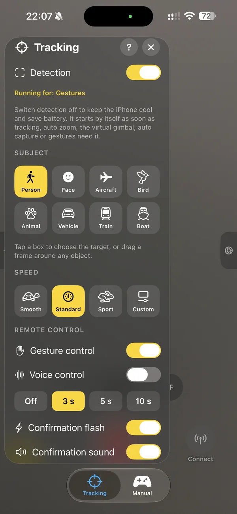

Följa motiv
Motivtyper, eget mål, hastighet och vad som händer när motivet skyms.

Välja motiv
I den vänstra panelen väljer du vad Keepsight ska leta efter.
| Motiv | Version | Kommentar |
|---|---|---|
| Person | Gratis | Hela kroppen. Bra för sport och rörelse. |
| Ansikte | Gratis | För närbilder, vloggar och selfies. Keepsight siktar på ögonen: ögonlinjen hamnar mitt i bilden, inte näsan. |
| Flygplan | Pro | Fungerar bäst mot himlen med teleobjektivet. |
| Fågel | Pro | |
| Djur | Pro | Hundar, katter, hästar med flera. |
| Fordon | Pro | Bilar, motorcyklar, bussar, lastbilar. |
| Tåg | Pro | |
| Båt | Pro |
Om flera passande motiv finns i bilden tar Keepsight det som ligger närmast mitten. Tryck på en annan ram för att byta.
Slå på och av igenkänningen
Igenkänningen kräver beräkningskraft och värmer iPhone. Keepsight räknar därför bara så mycket som behövs:
- Full takt: så länge följning, autozoom, virtuell gimbal, automatisk tagning, gester eller ett eget mål behöver igenkänningen.
- Förhandsvisning: annars ungefär fem bilder per sekund, så att du ser ramarna och kan välja ett mål.
- Av: med reglaget Igenkänning överst i följningspanelen stänger du av den helt. Den startar av sig själv så snart någon av funktionerna ovan behöver den.
Den gröna ramen håller sig alltid inom den synliga bilden, även när motivet är större än utsnittet.
Eget mål
Om du drar en ram runt ett föremål följer Keepsight just det föremålet, oavsett motivtyp. Den vänstra panelen visar då knappen Eget mål. Tryck på den för att ta bort valet.
Hastighet
| Profil | Beteende |
|---|---|
| Mjuk | Mjuk start, halva topphastigheten, små rörelser ignoreras. För lugna bilder. |
| Standard | Balanserad. Rätt utgångspunkt för de flesta motiv. |
| Sport | Reagerar snabbast. För snabba riktningsändringar. |
| Egen | Du ställer in alla regulatorvärden själv, se kapitlet Inställningar. |
När motivet försvinner
- Förutsäger: om motivet skyms en kort stund fortsätter gimbalen att panorera åt samma håll. Tiden ställer du in under Alla inställningar; standard är 1,5 sekunder.
- Mål förlorat: därefter stannar gimbalen tills motivet känns igen på nytt.
Snabba djur och fåglar

Mycket snabba eller oberäkneliga djur, särskilt små, snabba fåglar, går inte alltid att följa tillförlitligt.
Hur bra följningen fungerar beror på hur snabbt motivet rör sig genom bilden, på avstånd och storlek, på ljuset och på hur stabilt iPhonen känner igen det. Framför allt beror det på din gimbal: dess högsta panorerings- och tilthastighet, dess acceleration och dess fördröjning.
Hastigheten Sport kan inte pressa en gimbal förbi dess mekaniska gränser. Utan gimbal följer bara den virtuella gimbalen, inom den bild kameran redan ser.
- Håll längre avstånd eller zooma ut: motivet rör sig då långsammare genom bilden.
- Välj Sport för snabba riktningsändringar.
- Bra ljus och en lugn bakgrund hjälper igenkänningen.